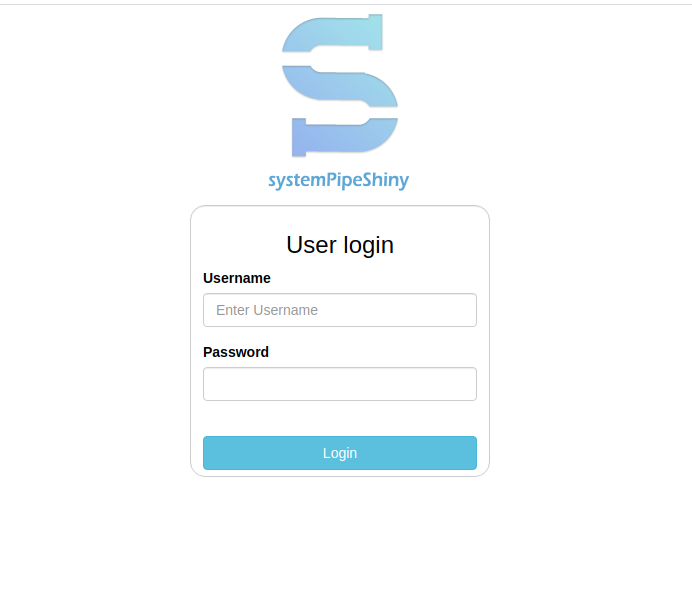
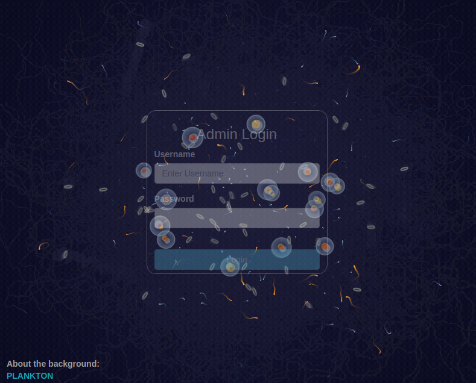
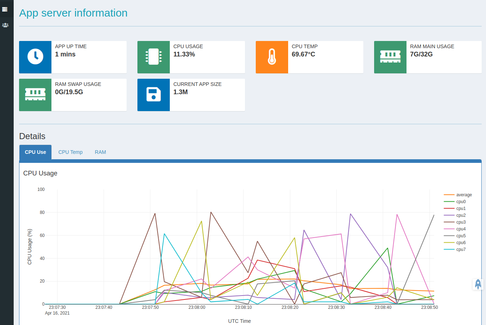
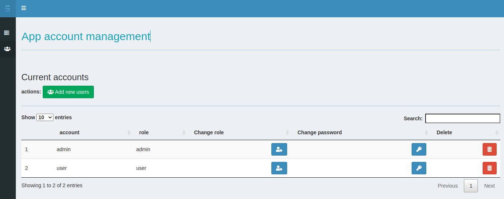
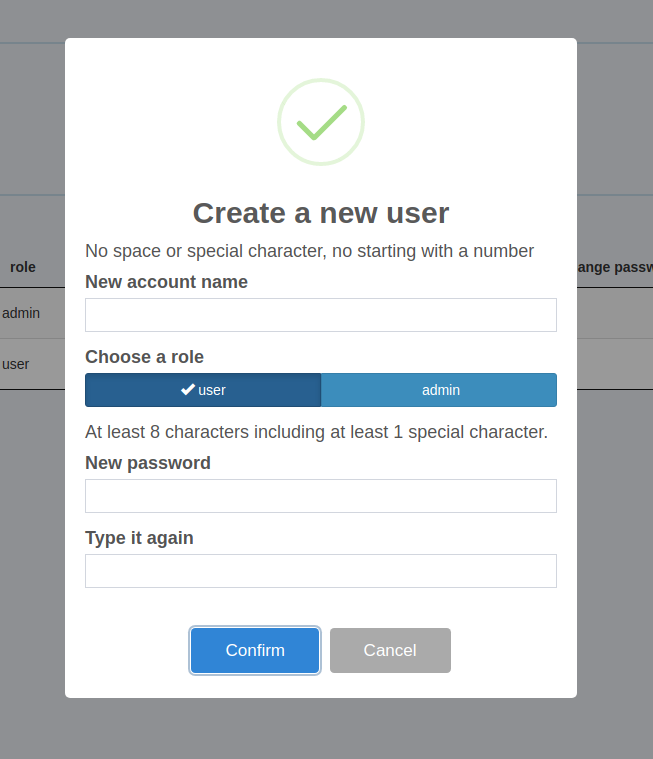

Accounts, Login and Admin
SPS accounts
After a SPS project is initialized, some default accounts has been set up. They will not become useful unless you enable the login and admin features.
There are 2 default accounts created for you to test before deploy:
| name | role | password |
|---|---|---|
| admin | admin | admin |
| user | user | user |
The admin account can be used in both the main app login and admin page login, and the user account can only be used for main app login.
Please change these accounts before deployment.
Account management
You can manage accounts in two ways: commandline and admin page. Here is how you manage from commandline, read how to do it from admin page below.
There are some helper code inside global.R file under your SPS project root.
## account information
## PLEASE use following to add your own accounts and remove the default accounts for deployment
# mydb <- spsAccount$new()
# mydb$accList()
# mydb$accAdd(acc_name = "XXX", acc_pass = "$xxxx", role = "admin")
# mydb$accRemove("admin")
# mydb$accRemove("user")
You can uncomment these lines to practice how to manage accounts, or read the reference manual about spsAccount class.
First to create a SPS project
suppressPackageStartupMessages(library(systemPipeShiny))
app_path <- "."
spsInit(app_path = app_path, overwrite = TRUE, open_files = FALSE)
## [SPS-INFO] 2021-04-16 16:25:15 Start to create a new SPS project
## [SPS-INFO] 2021-04-16 16:25:15 Create project under /tmp/RtmpMoNp2X/SPS_20210416
## [SPS-INFO] 2021-04-16 16:25:15 Now copy files
## [SPS-INFO] 2021-04-16 16:25:15 Create SPS database
## [SPS-INFO] 2021-04-16 16:25:15 Created SPS database method container
## [SPS-INFO] 2021-04-16 16:25:15 Creating SPS db...
## [SPS-DANGER] 2021-04-16 16:25:15 Done, Db created at '/tmp/RtmpMoNp2X/SPS_20210416/config/sps.db'. DO NOT share this file with others or upload to open access domains.
## [SPS-INFO] 2021-04-16 16:25:15 Key md5 db686a4f203edbdd0fe4c2a1642492d2
## [SPS-INFO] 2021-04-16 16:25:15 SPS project setup done!
Create a spsAccount object. SPS accounts are stored in the config/sps.db database inside your SPS projects.
acc <- spsAccount$new()
## [SPS-INFO] 2021-04-16 16:25:15 Created SPS account method container
## [SPS-INFO] 2021-04-16 16:25:15 Default SPS-db found and is working
## [SPS-INFO] 2021-04-16 16:25:15 Creating SPS db...
## [SPS-DANGER] 2021-04-16 16:25:15 Done, Db created at 'config/sps.db'. DO NOT share this file with others or upload to open access domains.
## [SPS-INFO] 2021-04-16 16:25:15 Key md5 127f00770c4ed318c48fe92cd67bf783
See what accounts you have
acc$accList()
## account role
## 1 admin admin
## 2 user user
You can also listed passwords. They are SHA256 encrypted.
tibble::as_tibble(acc$accList(include_pass = TRUE))
## # A tibble: 2 x 3
## account pass role
## <chr> <chr> <chr>
## 1 admin 0b1460498bf1b50e05cc07e53c7856fc23ecd3fc2bc404d52dbf3aae743f8a9a admin
## 2 user 796be5ca7dafddf5e1e7c032fc71386fe16274f63b6068bb2b064d4c9876eaae user
See SPS database for encryption key details.
Add a new user
acc$accAdd(acc_name = 'user2', acc_pass = '!newuser12345', role = "user")
## [SPS-INFO] 2021-04-16 16:25:15 Account user2 created.
Change the role of user2 from “user” to “admin”
acc$accRoleChange(acc_name = "user2", role = "admin")
## [SPS-INFO] 2021-04-16 16:25:15 Updated 1 rows
## [SPS-INFO] 2021-04-16 16:25:15 Account user2 role changed.
Remove a user
acc$accRemove("user2")
## [SPS-INFO] 2021-04-16 16:25:15 Deleted 1 rows
## [SPS-INFO] 2021-04-16 16:25:15 Account user2 removed
acc$accList()
## account role
## 1 admin admin
## 2 user user
Change password
acc$accPassChange(acc_name = "user", , acc_pass = '!newuser54321')
## [SPS-INFO] 2021-04-16 16:25:15 Updated 1 rows
## [SPS-INFO] 2021-04-16 16:25:15 Account user password created.
Validate password
acc$accMatch(acc_name = "user", acc_pass = '!newuser54321')
## [1] TRUE
acc$accMatch(acc_name = "user", acc_pass = "user")
## [1] FALSE
acc$accMatch(acc_name = "abc", acc_pass = "123")
## [1] FALSE
Validate password + role
acc$accMatch(acc_name = "user", acc_pass = '!newuser54321', match_role = TRUE, role = "user")
## [1] TRUE
acc$accMatch(acc_name = "user", acc_pass = '!newuser54321', match_role = TRUE, role = "admin")
## [1] FALSE
Main app login
After the account has been set up properly, one can try to turn on the login page for the main app. Use spsOption("login_screen", TRUE) or set login_screen = TRUE in global.R file.
Whether enabling the login screen is fundamentally different how the Shiny app loads the UI and server code.
- Disabled: loads UI and server on app start
- Enabled: loads login UI and server on start, loads main app UI and server code only when login is successful.
One advantage of using the login is the app starting time is fast. On app start, it only loads the login logic so it saves some time. The heavy part is the main app logic which will be loaded after a successful login. So the overall loading time is about the same. The difference is at what time point to load main app. Of course, if the user fails to login, main app will never be loaded. This can save some resources to handle unauthorized requests.
This difference may cause some javascript not working if you are loading your custom tabs with custom javascript. Set a wait signal in your javascript or report an issue to us if you have troubles.
The login screen is also controlled by another setting login_theme.
By default, if you turn on the “login_screen”, app will show you a random loading
theme (login_theme = "random") before you see the login panel. You can interact
with these themes or change to play with a different theme. Or you can specify
your favorate from “vhelix” (DNA double helix), “hhelix” (DNA flow), or “biomatrix”
(DNA Matrix).

If you are not a fan of these themes, you can use login_theme = "empty" to directly
go to login panel.

Admin page
SPS Admin page is panel of tabs to help app managers administrate the app. Under current version, SPS provides 2 main features: app information/statistics and account control.
Admin login
To reach the Admin page, users first need to enable this feature (default is TRUE)
in SPS options admin_page use either spsOption("admin_page", TRUE) or set it
in global.R. Afterwards, users need type in the correct url to find the page.
This can be set with the SPS option admin_url. Default is “admin”, admin_url = "admin",
but for security we recommend you to change it in deployment.
To access it, add “?” + “YOUR_ADMIN_URL” to your app url to visit it. For example:
we have a demo https://tgirke.shinyapps.io/systemPipeShiny_loading/
to visit the admin page, then we visit https://tgirke.shinyapps.io/systemPipeShiny_loading/?admin

Admin login page
You can use the testing account “admin” and password “admin” to login, but for security we strongly recommend you to change it in deployment.
App information
The first tab of the Admin page is current app and server information, like CPU, RAM, size, etc. On this tab, under details, some real-time statistic plots are rendered. You can interact with these plots to dig for more information.

Admin page app info
Account control
Instead of changing account information from commandline, you can use this tab to add / remove / change password/ change roles of current app accounts.

Admin page user control

Create a new user